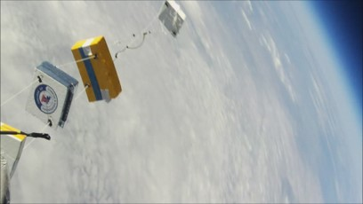
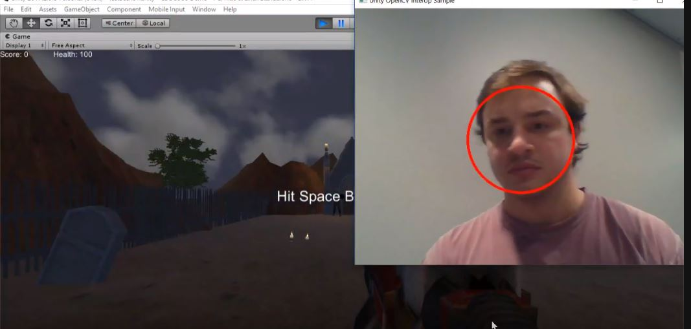
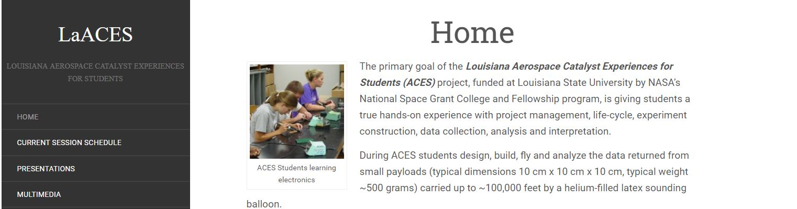

Intro

A rising senior at Louisiana State University working towards two degrees in Electrical engineering and Computer Science, I have a passion for technology spanning across design and creation of circuits to software and development of programs.
I have interned with Chevron for 2 years, The first year I mainly spent analyzing application interfaces as well as integrations. The second year I spent working on automating deployment processes, working heavily with PowerShell and Jenkins. I am also a student worker for the Physics department at my school, Louisiana State University. My experiences have afforded me the opportunity to grow proficiency in languages like C++, JavaScript, HTML/CSS, Batch scripting, PHP, MYSQL and work with various tools like MATLAB, Eagle, Jenkins, OpenCV, BASIC Stamp editor. My resume can be found here.
Outisde of school and work, I am an active member of Institute of Electrical and Electronics Engineers (IEEE) LSU chapter as well as the African Student Organization of which I am the director of communications. In my free time I enjoy working on personal projects and some of my hobbies include swimming and skating.
Work
Chevron
Software Engineering Intern

I developed and implemented the process for automated deployment from SCM. This means that I developed the process as well as wrote the scripts and configuration to automatically move newly committed code from our SCM (git) to Dev, test and Production servers depending on what branch the commit was made to.
I also created a solution to automate the manual process of shutting down services in a particular order on multiple servers by enhancing the legacy scripts to adhere to company standards. The scripts were tested in dev, QA and production environments.
Louisiana State University
Student Developer

· Using MYSQL, built and maintained various databases for several websites.
· Using HTML/CSS, built and maintained various websites for the physics department.
· Wrote PHP scripts to automatically populate various webpages from MYSQL databases.
Projects

C.H.I.C.K: Climate High-altitude Instrumental Collection Kit
Description: CHICK is a device that is designed to Record external temperatures, air pressure, and humidity measurements as a function of altitude up to 100,000ft (30.48km).
Our team then compared recorded data to standard atmospheric model to ensure the integrity of our data as a loose guide while
comparing slightly more intensely with the University of Wyoming Sounding Balloon data. which gives a more recent profile of these external variables.
This proejct was sponsored by Louisiana State University as part of the LaAces Program.
Links (Google Drive): Flight Readiness Presentation, Post Flight Analysis, Raw Data
Gun Head

Description: Gun head is a class project developed for the object oriented Programming class (CSC 3380) at LSU. It is an arcade-style first person shooter game
which uses a trained model for detecting faces in OpenCV to track a user and allow them to control an onscreen character. Our group used OpenCV
for the face recognition model and used Unity as the game engine. The user plays as a crypt keeper whose objective is to kill as many zombies as
possible to break a high score.
Links: YouTube Demo , GitHub Page
LaAces Website

Description: As a student worker, I work in the physics department at Louisiana State University, more specifically the Aerospace Catalyst Experiences for Students (ACES) department.
Part of my responsibilities include creating and maintaining various pages. I use PHP scripts to pull from a MYSQL database and populate HTML templates. I create queries and update
the website as needed.
Links: Website